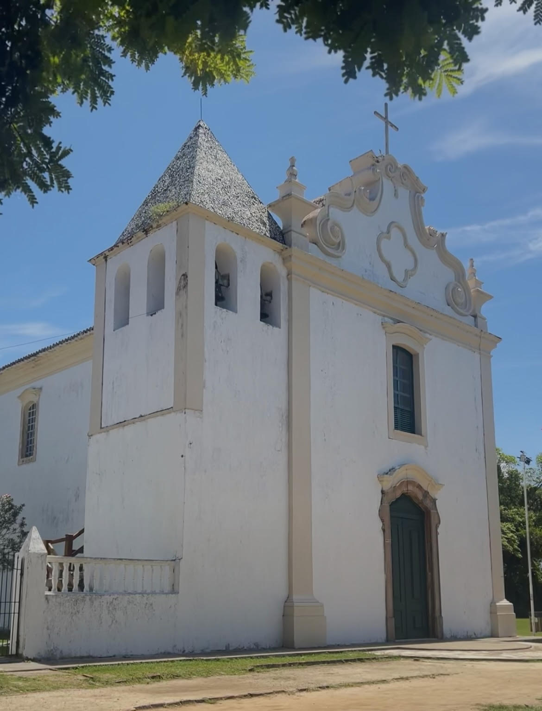

Nos divertimos muchísimo en la playa durante el día y en las fiestas por la noche. Pero además, conocimos el centro histórico de la ciudad. Durante esa excursión vimos un show de capoeira, comimos cacao natural, pasamos por una iglesia antigua y probamos licuados con frutas tropicales que se llamaba Morangola. Al final del recorrido, quedamos muy cansados y nos tiramos un rato a la sombra de algunos árboles.